与你同频的城市 · 单程票NO.0024
你走路的速度，也是一座城的形状。
24 题二选一，答完就知道你的频率该停在哪一站。
与你同频的城市 · CITY FREQUENCY
你走路的速度，也是一座城的形状。
24 题二选一，答完就知道你的频率该停在哪一站。
16 座城市，每张卡一句话、一个最好去的时段。
往下翻，看完全部 16 座，再决定先点哪一张。
晾衣杆下面，走过穿西装的人
工作日上午八点，换乘通道里
走得快，也留得住旧门牌
弄堂口晾着衣服，拐个弯就是玻璃幕墙；电梯里没人说话，脚步都很急。
七点四十，地铁进站，门一开你就迈出去，早饭在哪买、出地铁走哪边都算好了。人再多也不影响你走，顺着人流反而走得顺，被人撞一下也不会回头。包里还有一张折过很多次的收据，是你舍不得扔的小东西，可你不会为它多停一分钟。
约好七点吃饭，对方六点五十说在路上，你已经在楼下站了二十分钟，语气就冷了半度。你真正想说的是：「我不怕等，我怕等到最后只有我一个人在赶。」
最容易出活的是身边有人在走动的地方：节奏快、事情有先后、反馈当场就能给到，你会被推着往前走。全程安静、一个人对着屏幕的半天，反而要花很久才进状态。
你说自己不耐烦，可等红灯时只有你在看倒计时。
晚上八点半，写字楼玻璃门一开，风灌进来那一下。
早上七点去菜市场，先站在门口看十分钟再进去。
摄影：Ermell｜CC0（公有领域/CC0）｜来源：Wikimedia Commons
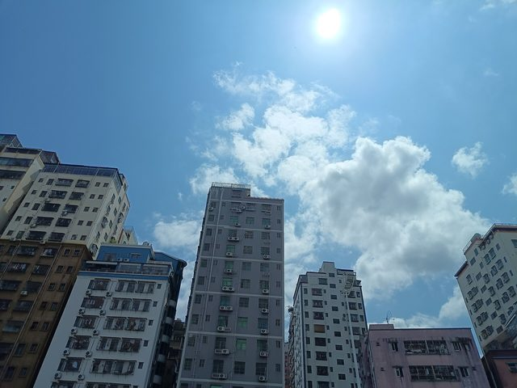
箱子拉链，到了这儿就没开过
秋天下午四点，书店二楼靠窗
所有路口都朝前，没人问你从哪来
地铁里全是年轻的脸，楼是新的，路是直的；夜里十一点，写字楼还亮着一半。
柜子里只留一个箱子，换地方时拎起来就能走，拉链都没怎么拉开过。早上出门时间算得很准，一路都是直路，不用绕。人挤的地方你不烦，反倒觉得有劲。手机里没有几张去年的照片，你更关心下周要做什么、跟谁一起做，别人不打听你的来历，你也乐得不解释。
对方翻出三年前的聊天记录，你只记得上个月的事，两个人就卡在那儿，谁也没往下说，气氛慢慢凉下来。你可以直接讲：「以前的事改不了了，我更想知道以后怎么过。」
在目标清楚、所有人朝一个方向的地方，你出活最快：会议短、结论快、当天就能动手。反过来，需要反复论证历史原因、照顾各种旧关系的场合，你会耗到没电。
手机里没一张旧照片，搬家却留着第一把钥匙。
晚上十一点，电梯一层层停，门开时还有人讲方案。
下午四点去新开的书店，坐二楼靠窗那个位置。
摄影：Fumikas Sagisavas｜CC0（公有领域/CC0）｜来源：Wikimedia Commons
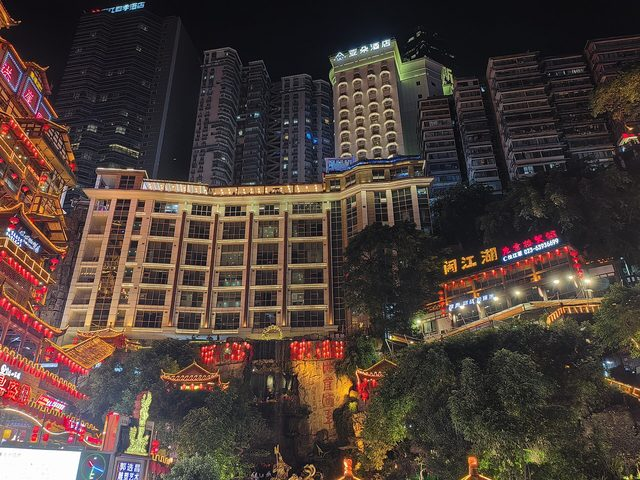
导航说左转，脚下是台阶
傍晚六点，喇叭喊着收摊
楼上是马路，楼下还是马路
坡和台阶把城市折起来，导航常常失灵；火锅店里说话全靠喊。
从一楼进去，出来是七楼，你从来没觉得哪里不对，也不回头数台阶。人多的地方你自在，声音再大也不影响你说自己的事。下雨天台阶打滑，你踩上去也不减速。相册里存着很多「这里以前是什么样」的照片，可你从不停下来细看，边走边拍，拍完就走。
两个人一起出门，你走前面拐了个弯，回头人已经不在了，路上也没再说过话；对方觉得你不管人，你觉得是对方跟不上。可以直说：「我拐弯前喊你一声，你别自己生闷气。」
适合在事情随时会变的地方干活：现场谈、当场改、出了问题马上补。流程写得太细、一步不能动的场合，你会坐不住；给你一块能自己发挥的地，你能顶住一整天的乱。
你说自己不怕乱，出门却总要带充电宝。
傍晚六点，坡上的喇叭喊着收摊，声音从上往下滚。
六点上天桥，站着看车拐弯，看十分钟就下来。
摄影：Yumeto｜许可：CC BY-SA 4.0｜来源：Wikimedia Commons
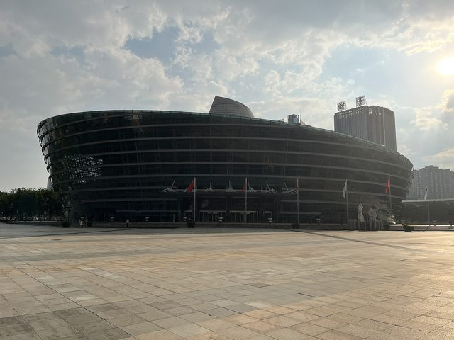
夜市收摊时，早班的人来了
早上换班那半小时，街上最多人
没有市中心，每条街都在上班
厂房、出租屋、夜市摊挨着长；路口没有统一的样子，凌晨还有人换班。
交接班还有十分钟，你已经把下一班要用的东西摆好，手套也戴上了。街上什么样你不太在乎，能办成事就行。住的地方换过几处，行李一直是一个箱子。路怎么长你就怎么走，不用记住哪条是主街。人多你不觉得吵，那种各忙各的热闹让你踏实。
对方约你周末出去，你说「看排班再说」，两次之后对方就不问了，只在你休息那天发一句在吗。你可以早点讲：「我这周只有半天，剩下半天想睡觉，不是不想见你。」
在事情明确、当天就要结果的地方最顺：接手、干完、交接，中间不用开会。需要长时间筹备、反复打磨细节的活，你会烦；把任务拆成今天能做完的块，你就一直有力气。
嘴上说随叫随到，手机常年开着静音。
凌晨一点，厂门口的灯还亮着，有人刚换完班走出来。
早上去街边吃一碗粉，坐着看半小时人流。
摄影：X-SHLIED｜许可：CC BY-SA 4.0｜来源：Wikimedia Commons
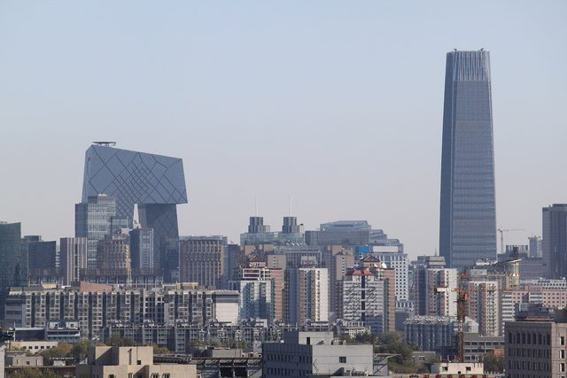
越宽的街，越适合一个人走
秋天下午，胡同里有人骑车经过
路很宽，人和人之间也很宽
环路一圈圈套着老城，胡同里安静，街上说话客气；走很久才遇见一个人。
车厢连接处那小块地方，你一站就是四十分钟，谁也不碰着谁。一天排得很满，通勤那段路反倒像留白。周末你会挑一条没走过的街走到底，走完再决定要不要吃饭。你愿意为一堵旧墙多绕半条街，却不愿为一场饭局多坐一小时。
对方说「你什么事都自己定」，你听着像被指责，可你只是习惯想清楚再开口，也懒得解释，别人就以为你冷淡。可以直接讲：「我想一起去，但我想先知道去哪、几点回。」
适合方向清楚、能长时间不被打断的活：关上门推一整天，晚上把结论摆出来。需要随时响应、总被打断的场合，你耗得很快；给你一段没人找的时间，你能把别人推不动的推完。
说饭局太长的你，走的时候还站在门口聊。
晚上九点，胡同里自行车铃响一声，又静下来。
早上去胡同口吃碗豆腐脑，绕着墙根走一圈。
摄影：Gary Todd from Xinzheng, China｜CC0（公有领域/CC0）｜来源：Wikimedia Commons
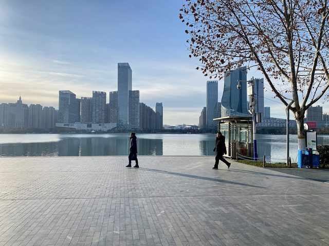
商场还挂着招租，路先修好了
晚上十点，新区主路只剩路灯
新修的路，笔直得有点空
新区路宽车少，绿化带比行人多；写字楼亮到很晚，商场里还挂着招租。
下班那趟车整节车厢常只坐你一个，扶手一路都没人握。地铁空、街也空，你反倒走得快。你不太留旧东西，换了地方就把之前那套放下。空着的地方你不慌，正好把手机里攒的事一件件办掉。一天结束得晚，但你从不在路上磨时间。
对方希望你多讲讲今天怎么样，你觉得没什么可说的，就回一句「还行」；对方越想靠近，你越退半步。可以试着说：「我不是不想讲，是我得有人问得具体一点。」
在有明确目标、协作人数少的地方最有效率：三五个人、一间会议室、当天出结果。人一多、会一长，你就开始看表；把范围缩小、把结论提前定好，你能连着干很久。
说没计划的人，日程表已经排到下个月。
晚上十点，路灯一盏盏亮过去，车很少，风声清楚。
傍晚去新区那条主路走一遍，从这头走到那头。
摄影：Kuroiotoko｜许可：CC BY-SA 4.0｜来源：Wikimedia Commons
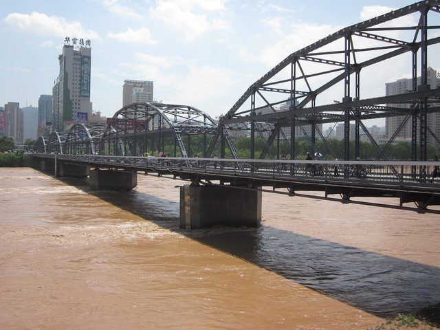
桥下风大，面要趁热吃
早上七点，桥下风声最大
城市被拉成一条线，跟着河走
两山夹着一条河，城区顺着河谷铺开；早上吃完面就走，桥下风声很大。
口袋里的公交卡磨得发白，边角都软了，你还在用，也没想过换。出城只有那么几个方向，你也习惯沿着一条路一直往前，不拐弯。早上那碗面吃完就走，不坐着聊。你对旧东西有感情，桥、墙、老楼，你都记得它们在哪儿，但也只是路过时多看一眼，看完继续走。
对方想晚上一起吃饭慢慢聊，你说「吃完我还得回去」，话很直，对方听着像被推开，饭桌就冷了下来。可以换个说法：「我不是不想聊，我是想早点回去，明天一起吃早饭。」
一条线走到底的活最适合你：接手、埋头、当天出结果，中间不需要人陪。需要频繁碰头、边聊边定的场合，你会想赶紧结束；把目标和期限写清楚交给你，你能一个人推很远。
说自己不爱讲话，问路能问三分钟。
早上七点，面馆的热气糊住玻璃，勺子碰碗响。
早上七点半去吃一碗面，加个蛋，十分钟吃完。
摄影：kenner116｜许可：CC BY 2.0｜来源：Wikimedia Commons
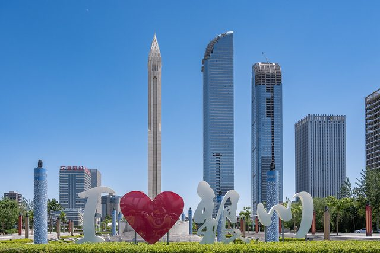
整条路上，只有你等灯
夏天傍晚，路上遇不到几个人
路很直，天很低，人不多
马路宽得能并排走好几队人，湖和沙都在城边；太阳落得慢，街上安安静静。
钥匙、手机、一张卡，兜里就这三样，出门不用回头看一眼。路口等灯的时候，前后常常只有你一个。一天的事排得紧，但从头到尾都是自己一个人办，不用协调谁。太阳落得慢，你也不急着回家。旧的招牌你看见了不会特意记，换了新的，你很快就习惯。
对方发来一长段话，你回了两行就去做别的事，隔了半天才想起没回完，对方以为你在生气。你可以先说清楚：「我没不高兴，我只是话少，你别拿字数猜我。」
人少、路清、目标单一的地方最适合你：早上把一天排好，然后就一直往前推。需要不停商量、协调各方意见的场合，你会烦；把决定权交给你、只留一个结果要交，你的速度很快。
嘴上说不合群，聚餐你却先到。
傍晚七点，太阳压得很低，湖边的风一阵一阵。
傍晚沿着那条宽路往城外走，走到看见湖为止。
摄影：xiquinhosilva｜许可：CC BY 2.0｜来源：Wikimedia Commons
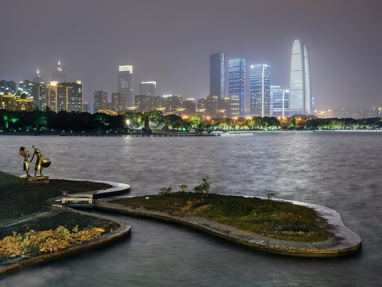
巷子窄到，两个人都要让
下雨的下午，河贴着墙根走
慢一点，才走得到园子深处
巷子窄，河在墙根下走；评弹从窗里飘出来，老人坐在门口剥豆子。
巷口的石阶被踩得发亮，你每次路过都要在上面站一会儿，才接着往巷子深处走。巷子窄、路是正的，你走进去一般不会走错。你对旧东西有耐心，一张旧桌子、一块旧砖，你能看上半天，看不完也没关系；一天没办几件事，你也不急。
对方说话很冲，你不接，过两天才用一句轻的话提起来，对方以为你早就不在意了，下一次也就不提了。可以直接说：「那天那句话我记住了，我只是不想当场吵。」
在有秩序、节奏不快、有人的地方最舒服：一件事改几遍也不烦，细节一层层抠下来。要当场拍板、一路往前冲的场合，你会卡住；给你时间和安静的角落，你能交出很稳的东西。
说自己慢，出门却一回都没迟到。
下午三点，评弹从窗户里飘出来，河在墙根下响。
下午去老巷子里走一条，走到河边就坐下。
摄影：King of Hearts｜许可：CC BY-SA 4.0｜来源：Wikimedia Commons
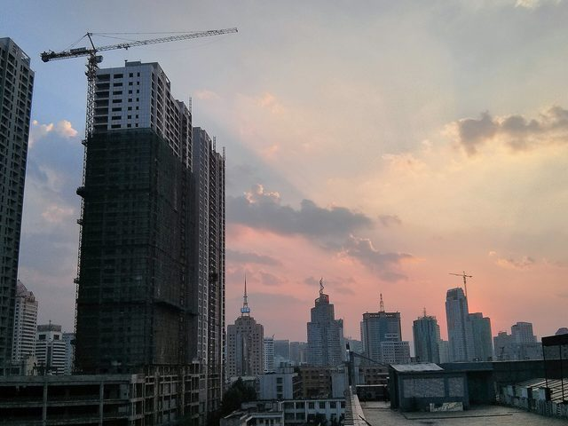
花摆在门口，比招牌显眼
冬天中午，茶馆门口晒得到太阳
太阳出来了，事情可以晚点说
街上花比招牌多，茶馆能坐一下午；新楼底下还卖着烧饵块，说话都慢。
上午十点，街边的小店才陆续拉开卷帘门，茶壶刚坐上炉子。太阳一出来，很多事都可以推到下午再说。楼是新的、路是直的，你不太在意这里以前是什么样，也不太留旧东西。急事来了你也先坐下再说。别人急你不急，事情最后也都办成了。
对方问「到底什么时候能定」，你回「快了」，这话说到第三次，对方就不问了，自己先去把事定了。可以具体一点：「我今晚八点前给你答复，没给就打电话催我。」
在节奏松、身边有人的地方最顺手：边晒太阳边把事聊开，人一多你反而思路活。需要卡死时间、全程盯表的场合，你会做得很别扭；把时间放宽、留出聊天余量，你的产出反而稳。
说佛系的人，外卖超时就开始看手机。
傍晚四点，太阳斜进茶馆，杯子放在桌上轻轻一响。
下午三点找一家茶馆坐下，点一杯，坐满一小时。
摄影：FRED｜许可：CC BY-SA 4.0｜来源：Wikimedia Commons
急事坐下来，也得等茶泡开
秋天下午三点，院子里刚开局
茶泡开了，急事也变慢了
竹椅摆到街边，麻将声从院子里传出来；巷子拐来拐去，屋檐还是旧的。
盖碗里的茶续到第三道，你才把手机倒扣回桌上，谁也不催谁。路没有一条是直的，你走熟了就不看导航。坐满的院子、摆到街边的桌子，你觉得那才是正常的声音。旧屋檐、旧门牌你会记得，但不挂在嘴上；一天走不远，话倒说了不少。
对方说好七点到，八点还没来，你也不催，只是把菜先动了；等人坐下，你已经没什么想说的。这句话当时就该讲出来：「我不生气，但你迟到的时候，我会觉得自己不重要。」
在有人的地方、节奏自己定的时候最出活：一张桌子、几个人、边说边做，聊到一半事情就成了。只看进度的场合，你会拖；给你一点松的时间和人，你能把难推的事推起来。
嘴上随遇而安，改行程时一句句问清楚。
傍晚六点，院子里麻将牌倒下来，哗啦一声。
下午去巷子里找一家茶馆，坐到天黑再走。
摄影：FISU｜许可：CC BY 3.0｜来源：Wikimedia Commons
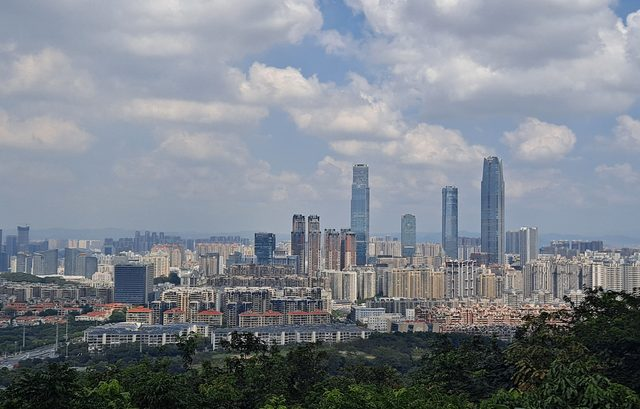
天黑了，这条街才开始营业
夏天晚上九点，摊子刚支好
夜里才是一天的开始
电动车流在树下穿，夜市一直摆到半夜；楼是新的，街是弯的。
晚上九点，楼下的摊子才刚支起来，你把椅子往外挪了挪。街上人多、车多、声音杂，你不觉得吵，还愿意在人堆里慢慢骑着走。路是弯的，你也习惯拐着走。新的楼、新的店你进去得很快，旧东西不太留，前一天的事也很少再想，也不太回头。
对方早上发消息，你到晚上才回，对方觉得被晾着，几次之后就不发了。可以提前打个招呼：「我白天基本不看手机，晚上八点以后我都在，有事那时候说。」
天黑之后你反而清醒：晚上开会、夜里改稿、边吃边聊，效率比白天高。上午被按在桌前、要求准点的场合，你很难进状态；把重要的事排到傍晚，你能一口气做完。
说自己是夜猫子，闹钟却设了三个。
晚上十一点，电动车从树下穿过，铃声一串。
晚上九点去夜市走一趟，从这头吃到那头。
摄影：EditQ｜许可：CC BY-SA 4.0｜来源：Wikimedia Commons
早上一壶茶，能坐掉半个上午
春天早上，老茶馆刚开门
一条街走完，刚好一壶茶
老城方正，巷子安静；早上喝茶，晚上泡澡，路上人不多，说话都轻。
街口那家茶社的椅子一直摆到路边，你走完一条街正好坐下，一壶茶还没凉。路是正的，你走起来心里有数，不用问人。你对旧东西有耐性，老墙、老门、老字，你能站在那儿看很久。一天只办一件事，你也不觉得亏，也不觉得那是浪费。
对方嗓门一大，你就不说话了，事后也不太提，对方以为这事过去了，你也当它过去了，谁也不提。可以试着说：「你刚才那样说，我心里过不去，我们坐下来讲清楚。」
一个人、时间长、要求细的活，你坐得住：早上开始，中间不被打断，晚上收工。人多声音杂，你会想退到边上；给你一间安静的屋子、一个清楚的题目，你交出来的东西很干净。
说自己喜静，家里的电视一直开着。
早上七点，茶馆的门板一块块卸下来，木头碰木头。
早上七点去老茶馆坐半小时，听旁边人说话。
摄影：Gisling｜许可：CC BY-SA 4.0｜来源：Wikimedia Commons
路灯亮起来，堤上就剩风
秋天傍晚六点，长堤上起风
海风把马路吹得很空
路宽，树多，海边一条长堤没人抢；九点以后街上就安静了，玻璃楼在暗处亮着。
出门不用挑时间，路宽、树多，走上半小时也遇不到几个熟人。天黑之后路上就没什么人了，你正好在那时候出门。一天排两三件事就够，多出来的时间你不打算填，也不觉得浪费。楼是新的、路是直的，你不觉得这里有什么旧事要惦记，也不留旧东西。
对方想天天见面，你觉得一周见两次刚好，谁也没说破，就慢慢淡了，谁也没再提。可以早点讲清楚：「我喜欢你，但我也需要自己待着的时间，这不是在躲你。」
在安静、人少、时间自己排的地方最省力：上午一个人做，下午散个步再回来。需要随时在线、随时被叫的场合，你会想关机；把会议压到最少，你能在同样时间里做完更多。
说怕吵，耳机里却一直有人说话。
晚上九点，海边堤上没几个人，风把声音吹散。
傍晚六点去海边长堤走一段，走到灯亮。
摄影：Brücke-Osteuropa｜Public domain（公有领域/CC0）｜来源：Wikimedia Commons
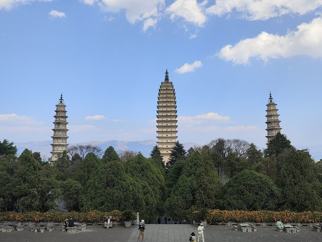
店门几点开，看当天心情
春天上午十一点，城外田边
时间在这里不太准
城墙以内是石板路，城外是田和湖；狗在门口睡，店开到几点看心情。
十一点才吃早饭，两点吃完午饭，你从来不觉得这有什么不对。路上人不多，你也不急着认识谁，点头就过去了。路是顺着地势长的，你走熟了就不看方向。旧东西你留得多：旧衣服、旧票根、别人不要的桌子，你都觉得还能用，扔了可惜。
对方问「我们以后怎么办」，你说「先这样吧」，对方听着像被拖着，问过一次就不再问，你也没主动说。可以诚实一点：「我现在给不了时间表，但我想和你把这段日子过好。」
在没固定作息、自己定顺序的地方最来劲：想干就一口气干到半夜，不想干就出门走一圈。要求准点打卡、每天一个节奏的场合，你会想逃；给你一个宽松的期限，你反而会提前交。
说不在乎时间，约人却总能准时到。
傍晚七点，狗在门口翻了个身，石板路上有人拖着鞋走。
早上去城外的田边坐一会儿，看人下地。
摄影：Ngguls｜许可：CC BY-SA 4.0｜来源：Wikimedia Commons
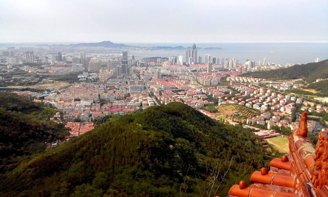
坡上走一趟，能看见海
夏天傍晚六点半，坡上看得见海
海拐个弯，城就跟着拐
海岸线把城区切得零碎，坡上坡下都是房；风大，街上人少，晚饭吃得早。
摊主把秤收起来，冲你摆摆手，你提着空袋子沿着海边慢慢往家走。城顺着海岸拐，你出门常常拐着拐着就到了别处，走到哪儿算哪儿，回来再吃饭。晚饭吃得早，天黑之后就不太出门了。旧的东西你不留，新的地方你也不急着去。
对方问你想要什么，你说「都行」，问了几次对方就不问了，两个人也越来越少话，饭桌上只剩筷子声。可以试着说：「我说都行，是怕说错，你多问一句我就说得出来。」
在人少、节奏慢、能自己排顺序的地方最稳：上午做一件，下午做一件，中间出门走一圈。要求快、要求当场回应的场合，你会想躲；把时间放宽、要交的写清楚，你能一直做下去。
说没什么想法，选馆子纠结半小时。
傍晚六点半，风从坡上下来，饭菜的味道跟着过来。
傍晚去坡上那条路走上去，站到能看见海。
摄影：Aaron Zhu｜许可：CC BY-SA 3.0｜来源：Wikimedia Commons
这是一份关于你怎么用时间、怎么和人保持距离的描述，不是心理诊断，也不给城市排先后。
五分钟，24 题。随时可以停下，停在这里不会留下任何记录。